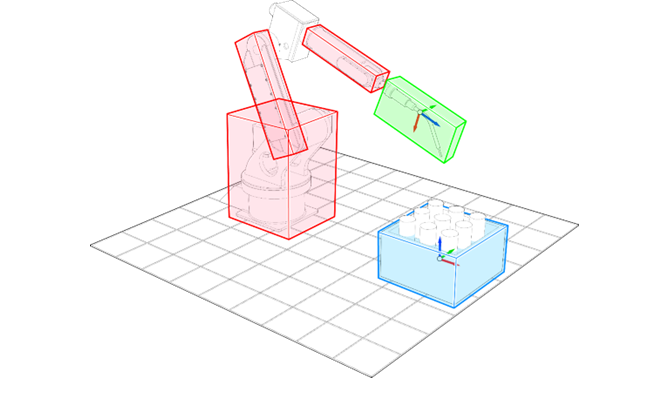
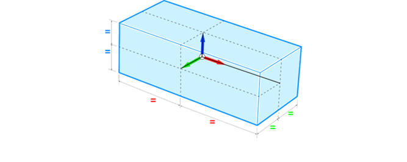

A collision between an Oriented Bounding Box (OBB specified by COLLISION_OBJECT) around a real object and the OBB specified in TOOL_COLLISION can be detected and controlled by the collision detection algorithm.
The distance between the TOOL_COLLISION and the active COLLISION_OBJECT(s) is checked every servo period and the robot will decelerate at FAST_DEC in the case of the collision distance is smaller than the deceleration distance.
It is recommended to specify the COLLISION_OBJECT and the TOOL_COLLISION slightly bigger than the real object to have a margin where the tool will stop.
Tool collision object is depicted in green. Collision object is depicted in blue and OBBs bounding robot
links are in red.

The collision algorithm measures the distance between the tool collision object and collision objects and OBBs of the robot links. If the distance is less than the fast deceleration distance then, the robot will stop securely to avoid the collision. Be aware that the algorithm uses the tool collision against other objects, so it remains possible that the robot links can collide with collision objects.
|
COLLISION_OBJECT(function[, identity])
COLLISION_OBJECT(identity, activate)
COLLISION_OBJECT(identity[, name], x centre, y centre, z centre, x rotation, y rotation, z rotation, x half distance, y half distance, z half distance) |
|
|
Parameters: |
|
|
function |
-1 = display existing collision objects. -2 = remove collision objects. |
|
identity |
Collision Object index |
|
activate |
ON = activate the specified collision object. Note: Once activated, a collision object cannot be edited. To edit, it needs be deactivated first from all kinematic groups. Use KINEMATIC_GROUP command to see if the relevant collision object is being activated or not. OFF = deactivate the specified collision object |
|
(optional) name |
Unique name of the collision object (no duplicates). |
|
x, y, z centre |
Centre position of the OBB on the object in mm |
|
x, y, z rotation |
Orientation of the OBB on the object in degrees |
|
x, y, z half distance |
Half distances measured in every vector of the OBB in mm |
Maximum number of COLLISION_OBJECTs active is 10.
Once created, a collision object needs to be enabled by active_status ‘ON’. It is not automatically enabled by default upon creation.
A collision object can be activated in one kinematic group and deactivated in others.
The following illustration shows the parameters of a Collision Object. The Collision object frame is located in the centre representing the position and orientation of the object.
Half distance parameters are shown colour-coded in accordance with their respective XYZ vector.
|  |
Create a collision object with the name of ‘co1’ on index 0 and enable it.
Terminal
>>collision_object(0, "co1", 100, 100, 100, 0, 0, 0, 50, 50, 50)
Display all collision objects on Terminal.
Terminal
>>collision_object(-1)
0 [co1] : 100.00000, 100.00000, 100.00000, 0.00000, 0.00000, 0.00000, 50.00000,
50.00000, 50.00000
1 [co2] : 333.00000, 444.00000, 555.00000, 0.00000, 0.00000, 0.00000, 22.00000,
33.00000, 44.00000
2 [co3] : 200.00000, 200.00000, 200.00000, 0.00000, 0.00000, 0.00000, 10.00000,
10.00000, 10.00000
Remove collision object index 1.
Terminal
>>collision_object(-2, 1)
Deactivate collision object index 0.
Terminal
>>collision_object(0, OFF)